Gear & Supplies

Supplies
for
the Trip
by
Jessica Saugen 2020.
The frist challenge was to aquire all the supplies necessary for this excursion. Now these were difficult things to round up and took roughly 3 months of pre-prepartion to aquire. My recommendation is that once you have applied for the lottery to secure a spot, start looking for a suitable boat. Now this boat needed to be light enough to manage to get on a flat bed truck so so we could sucessfully make the portage from Diablo Lake to Ross Lake. This portage invovles boating to a the designated location and calling on the provided telephone to order the portage serivce. It'll cost you 40$ one way, cash only.

Gear
Collected for the Trip by Jessica Saugen 2020.
Diablo Lake

Diablo
Lake
Starting
Out by Jessica Saugen 2020.
Our adventure started at the Diablo Lake boat launch, where the vivid turquoise waters greeted us. The color, a result of glacial silt, was breathtaking, and as we loaded our gear onto the boat, I felt a sense of excitement. We set off, gliding across the calm surface, surrounded by towering peaks and lush forests. The stillness of the water mirrored the beauty of the mountains, making every moment feel magical.

Starting
Out by
Jessica Saugen 2020
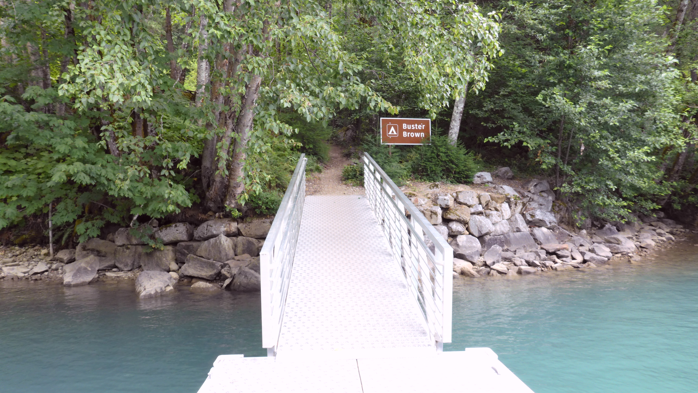
Arriving at
Buster
Brown
by Jessica Saugen 2020.
Campsite #1: Buster Brown
After a short but picturesque journey, we arrived at our designated campsite on Diablo Lake. The campground was remote and peaceful, accessible only by boat. We pitched our tent under the towering cedar trees and got ready to cook some food as we were famished.
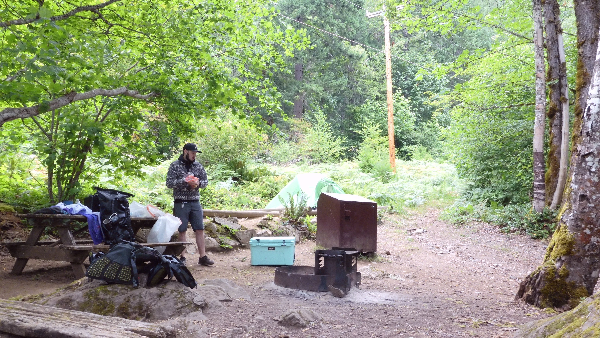
Buster Brown
Campsite
by
Jessica Saugen 2020.
While we waited for our first freeze-dried meal to "cook" in the bag with boiling water from our knock-off jetboil we took a moment to appreciate the view. The sound of gentle waves lapping against the shore was the perfect backdrop to the begging of this spectacular adventure.
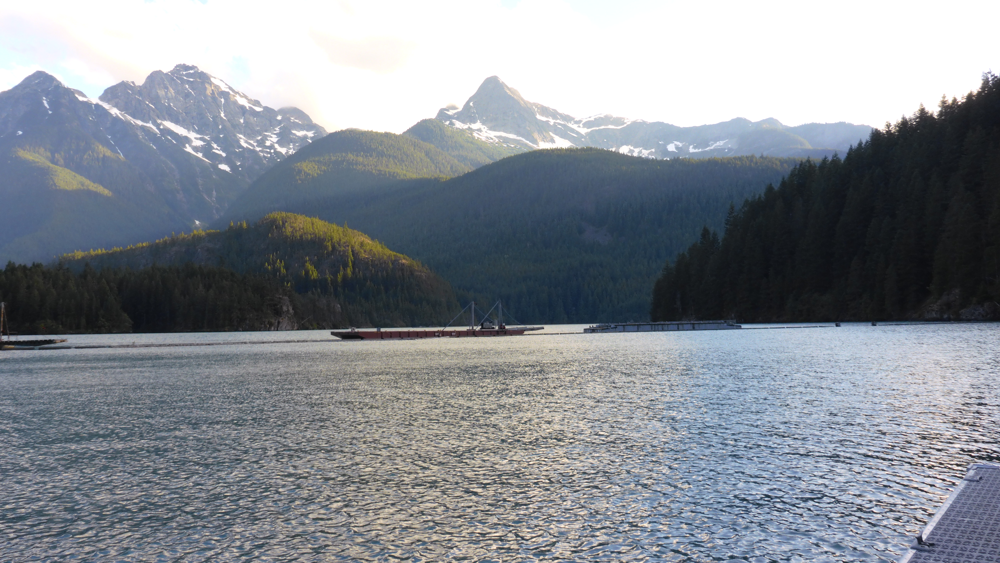
The view
from
Buster
Brown by Jessica Saugen 2020.
The View
The new day we packed out gear and headed out for the second portion of the trip: Ross Lake. We were nevervous as we didn't know what to anticipate with the portage process. It seemed crazy to think there was a random phone next to an unmarked dock that we would need to locate and with good timing as there was an early cutt-off time for the last portage trip and we had slept in that day. Time was of the essence but precision with gear packing was of utmost importance due to the fact that we would need to unload and reload everything on the truck once we got to the portage. We were very silent as we hustled to to make up for the time we'd overselt while still being calculated with our packing.

Leving
Buster
Brown by Jessica Saugen 2020.
Portage to Ross Lake
Boating from Diablo Lake to Ross Lake requires a 3.5-mile journey to reach the portage dock located below the Ross Dam Powerhouse. This journey necessitates careful planning and knowledge of the portage services available in the region.
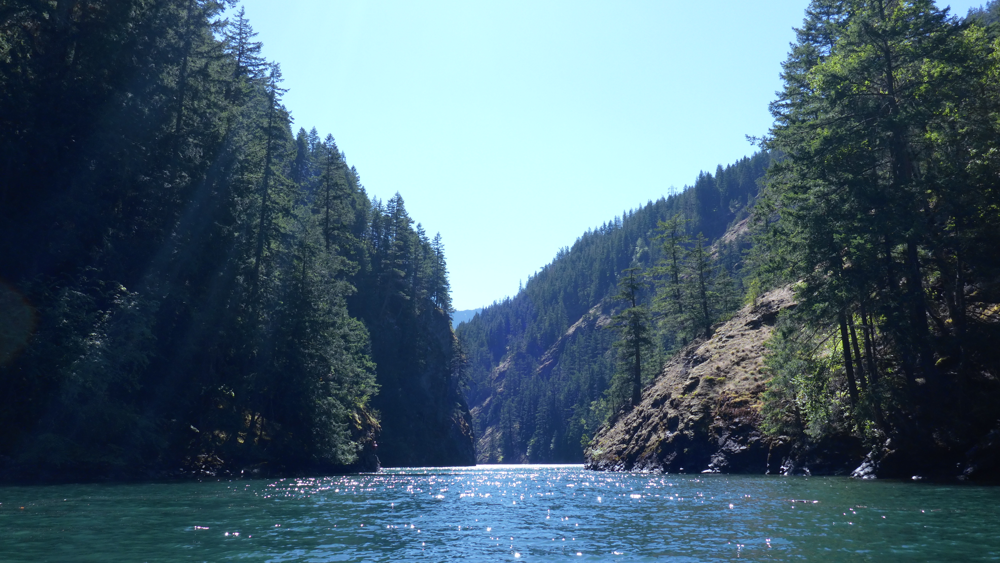
Path to Portage
by
Jessica Saugen 2020.
Boating portage from Diablo Lake to Ross Lake involves understanding the portage route, utilizing designated services, and preparing the right equipment for a smooth transition. The Ross Lake Resort facilitates this journey by offering truck portage services that enhance accessibility between the two scenic lakes.
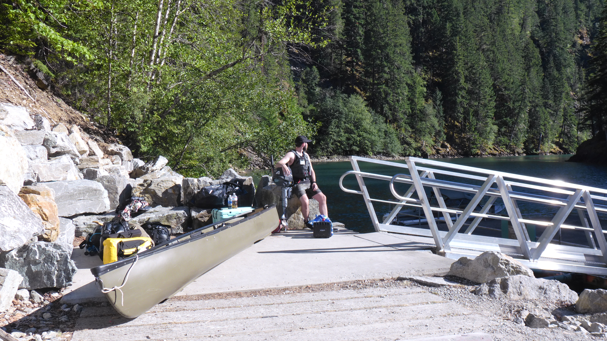
Waitng for
Portage by
Jessica Saugen 2020.
The Ross Lake Resort provides a truck portage service operational from June 6th to October 31st. This service assists boaters by transporting their vessels between Diablo Lake and Ross Lake, thereby alleviating the physical demands of transporting equipment across the rugged terrain. The service operates seven days a week from 8 AM to 2pm.
Ross Lake
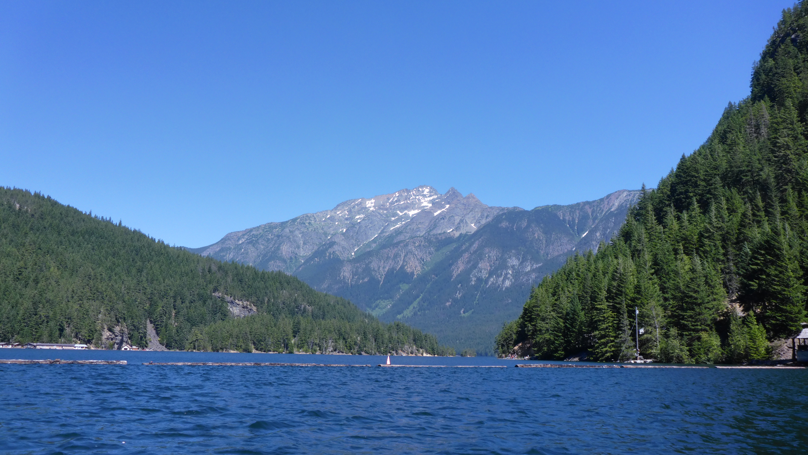
Getting
Started on Ross Lake by Jessica Saugen 2020.
With the portage part of our journey behind us we could relax and let ourselves really take in the depth of tranqility in the nature surrounding us. Northbound on Ross lake was the direction towards our campsite location but other than the general cardinal direction we had no idea where we were going or what to look for to identify our camp location. This would prove to be a bit of a challenge but nothing that we couldn't handle seeing as how well we had sucessfully mastered each part of the trip thus far.
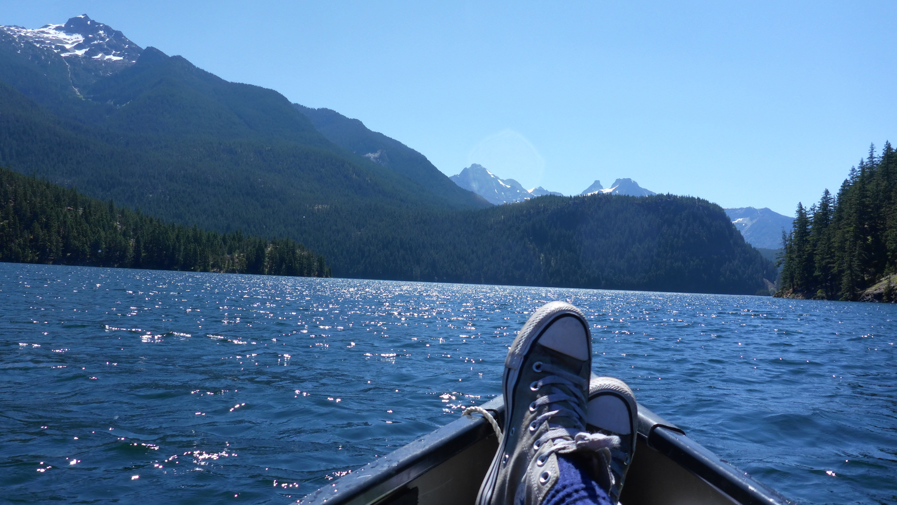
Going to Camp
on
Ross Lake by Jessica Saugen 2020.

Taking it easy
at our
campsite by Jessica Saugen 2020.
Campsite #2: Big Bear
When we arrived at Big Bear Campsite it was a rough first night. People without a reservtion had taken liberty of setting up their campsite at the location leaving no room for us to set up. That first evening was rough but I had devised a plan for how we were going to secure ourselves a spot the next day. I had heard the group who was located in the idea camping spot that they were heading out early first thing in the morining. I told my adventure pal that we would only setup the tent with the minimal for the first night and then keep an ear out for when that group left around 4am. It was a stroke of genius and my plan worked perfectly. Finally we had truly ARRIVED.
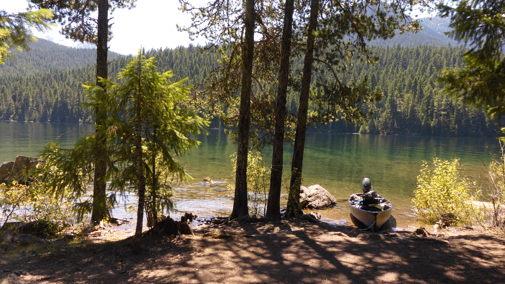
The View on
Ross
Lake by Jessica Saugen 2020.
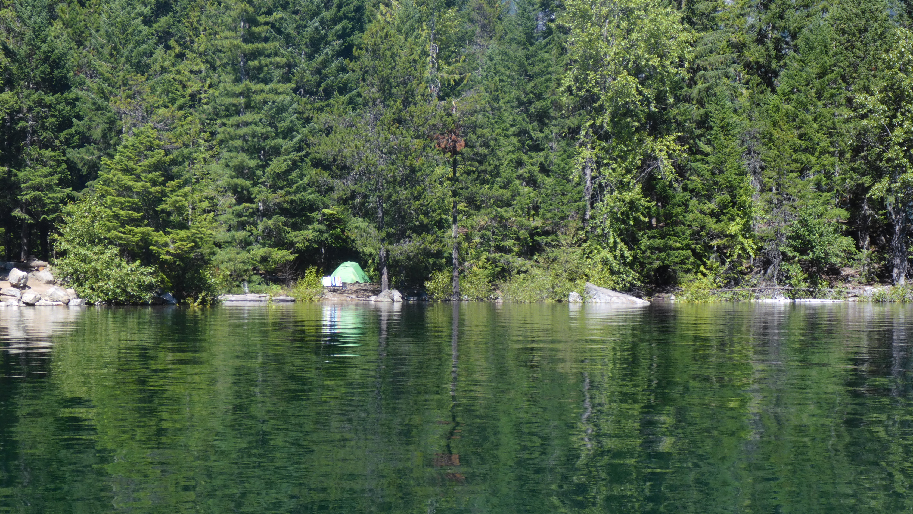
Our Spot on
Ross Lake
by Jessica Saugen 2020.

Campsites on Ross Lake
by Jessica Saugen 2020.
Exploring on Ross Lake
Diablo Lake and Ross Lake are renowned for their breathtaking natural settings and serene environments. The vivid turquoise color of Diablo Lake, shaped by glacial sediments, and the peaceful forested shores of Ross Lake create a picturesque backdrop for outdoor exploration.
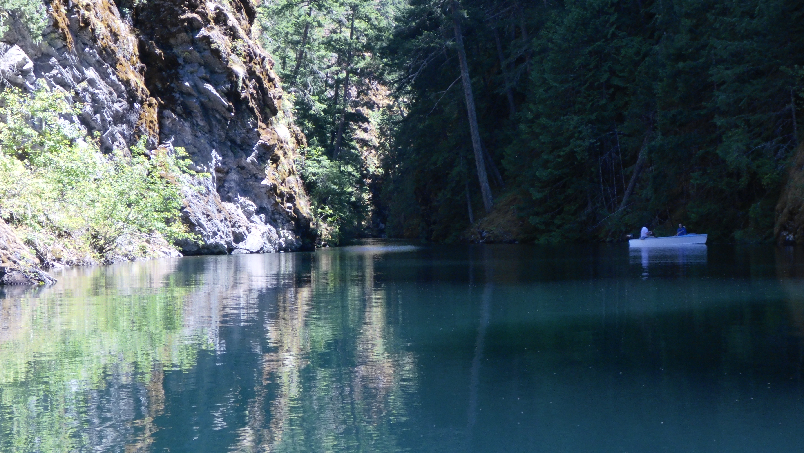
Hidden Cove on
Ross
Lake
by Jessica Saugen 2020.
We spent our days exploring the vast beauty of the lake and checking out other campsite desinations as we were already anticipating a return adventure for the following sesason.

Exploring
other
campsite locations on Ross Lake
by Jessica Saugen 2020.
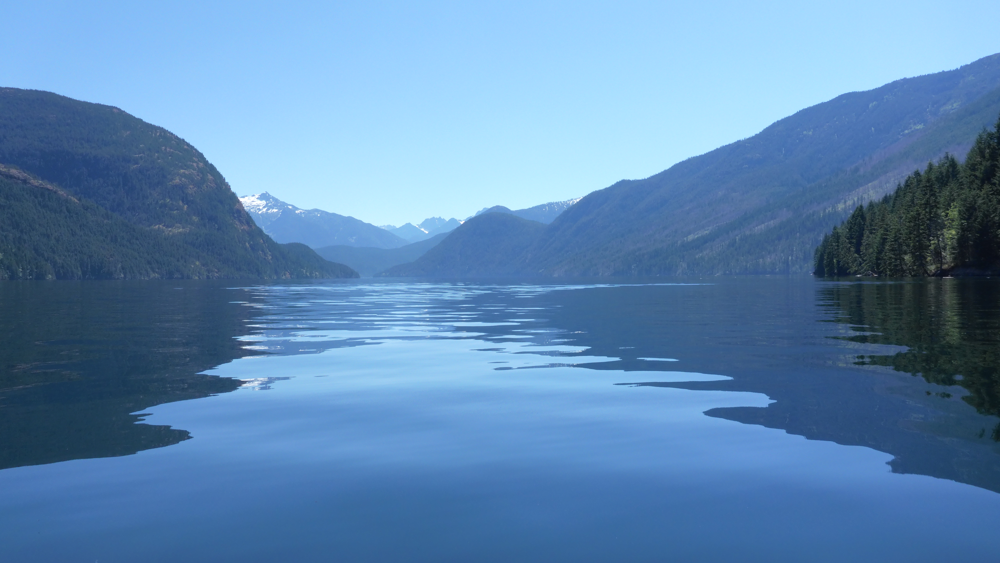
Journeys on Ross
Lake
by Jessica Saugen 2020.
Go Boldly into the Unknown
Boating through these landscapes was incredibly calming and rejuvenating. The hard work in preparing and getting here is worth it ten-fold for the awe-inspiring experince that awaits you. The journey between the two lakes is as memorable as the destination itself. Don't forget to pause often to turly appreciate the beauty that envelops you.